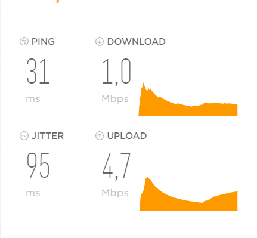

Sehr geehrte Damen und Herren,
ich habe schon vor 2 Tagen hier einen Beitrag geschrieben. Leider habe ich aber keine Rückmeldung oder Antwort bekommen, deswegen schreibe ich jetzt einen neuen.
Wie man schon im Titel sieht habe ich seit längerer Zeit Probleme mit meinem Homenet bzw meinem Net Cube. Mein Download und Upload ist um einiges schlechter als er normal sein sollte ! In meinem Paket steht das ich einen Download von 50 MB/s haben sollte, der aber bei mir maximal bei 5 MB/s ist. Beim Upload schaut es auch nicht besser aus, auch maximal bis 5-6 MB/s. Diese Probleme habe ich schon seit 2 Monaten aber noch nie war es so schlimm wie in den letzten 2 Wochen. Für mich persönlich ist das ein großes Problem da ich im Internet sehr aktiv bin und leidenschaftlicher Computer Spieler bin.
Ich hoffe ein hilfsbereiter User hier in der Community kann mir helfen.
MfG Tobias
P.S meine Wohnort 5753 Saalbach. Wenn das helfen würde


Hallo
@K4rlo
Du bist hier in der Community. Moderatoren, Administratoren und Support lesen hier auch mit aber bevorzugt während der regulären Arbeitszeiten und da es sich um einen Störung handelt, gedulde dich bitte bis zum Wochenbeginn.
PS: den ersten Post von dir hab ich auch gesehen jedoch sollte doppeltes posten zum selben Thema vermieden werden
")
LG
Hallo K4rlo,
Also - bei dir wäre ich mir nicht sicher, ob es ein reines Auslastungsthema des Senders ist.
Wie sieht denn der Empfang aus? Wie weit ist der Sender weg?
Vor allem interessant wäre, eine Messung über den Tag verteilt.
Bitte schick uns da noch mehr Infos, dann können wir genauer auf dein Problem eingehen.
Erfahrungsgemäß ist es leider so, dass die höchste Auslastung über das Jahr eher am Ende des Winters ist, denn da surfen alle am Abend und keiner will mehr raus.
Deshalb wäre eine Messung spät am Abend, früh am Morgen und zur Mittagszeit sehr wichtig, um dir helfen zu können.
LG
Christian
vor 14 Stunden schrieb 5igi3lue:
Hallo
@K4rlo
Du bist hier in der Community. Moderatoren, Administratoren und Support lesen hier auch mit aber bevorzugt während der regulären Arbeitszeiten und da es sich um einen Störung handelt, gedulde dich bitte bis zum Wochenbeginn.
PS: den ersten Post von dir hab ich auch gesehen jedoch sollte doppeltes posten zum selben Thema vermieden werden
LG
Hi 5igi3lue
Danke für die Information ;D
vor 8 Stunden schrieb Christian_E:
Hallo K4rlo,
Also - bei dir wäre ich mir nicht sicher, ob es ein reines Auslastungsthema des Senders ist.
Wie sieht denn der Empfang aus? Wie weit ist der Sender weg?
Vor allem interessant wäre, eine Messung über den Tag verteilt.
Bitte schick uns da noch mehr Infos, dann können wir genauer auf dein Problem eingehen.
Erfahrungsgemäß ist es leider so, dass die höchste Auslastung über das Jahr eher am Ende des Winters ist, denn da surfen alle am Abend und keiner will mehr raus.
Deshalb wäre eine Messung spät am Abend, früh am Morgen und zur Mittagszeit sehr wichtig, um dir helfen zu können.
LG
Christian
Hi Christian
in der Früh hab ich leider keine Zeit nachzuschauen. Mittag habe ich wie im Bild oben nur max. 5 MB/s, am Abend ist es noch schlimmer. Aber ganz früh so um 3:00 Uhr ist mein Internet ( relativ ) gut ungefähr 30 MB/s. Was trotzdem nicht die gewünschten 50 MB/s sind. Ich weis echt nicht mehr weiter

Aber Danke für deine Antwort
MfG K4rlo
OK.
Der Empfang ist aber ok und du hast den Router mal testweise einfach raus gestellt oder das Fenster aufgemacht.
Klingt komisch ist aber ein verlässlicher Test, ob du evtl. Signalpegelprobleme hast.
LG
Christian
Hi Christian,
sry das ich jetzt erst zurück schreibe hatte Stress in der Arbeit
Also das mit dem Fenster aufmachen und raus stellen habe ich schon probiert ist aber nicht besser geworden mein Signal schwangt immer zwischen 1-3 Strichen manchmal sogar 3 Rote... geht mir langsam auf die Nerven vlt werde ich mir einfach bald ein neues Internet kaufen...
LG K4rlo
Also dann hast du auf alle Fälle auch ein Signalproblem.
Andere Hausseite auch schon probiert?
Aber da würde eine Außenantenne wohl helfen - natürlich steigt da der Aufwand.
Du kannst den Router ja eigentlich überall mitnehmen und testen - dann siehst du Unterschiede und was möglich ist.
Wie sieht der Empfang am Smartphone aus, sofern das von Tmobile ist....
{kind=link}